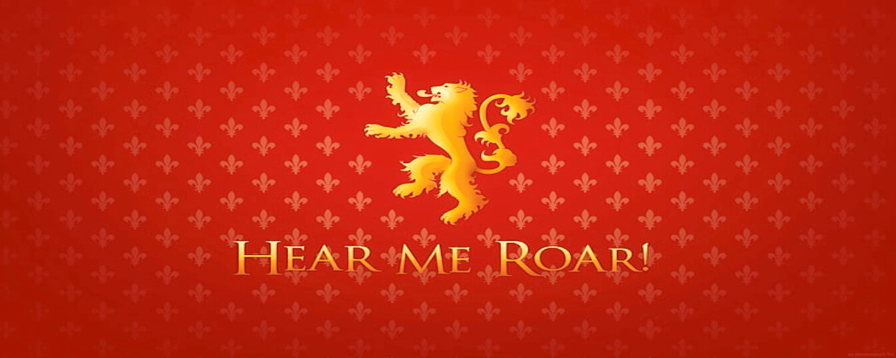
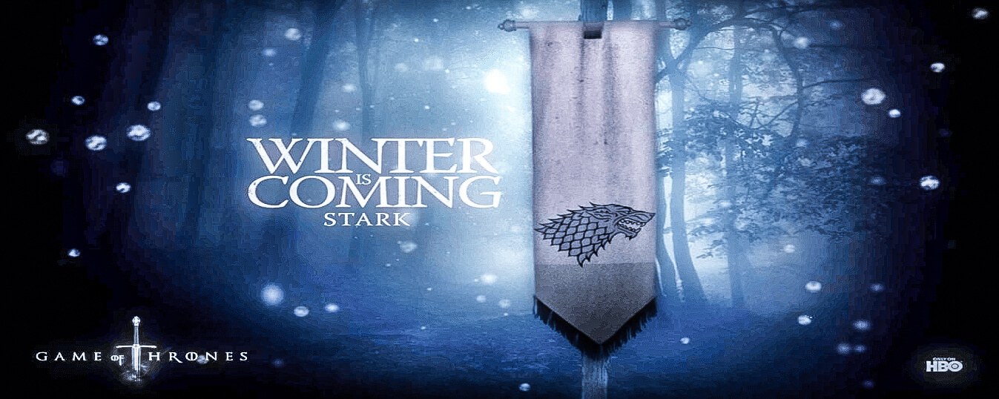
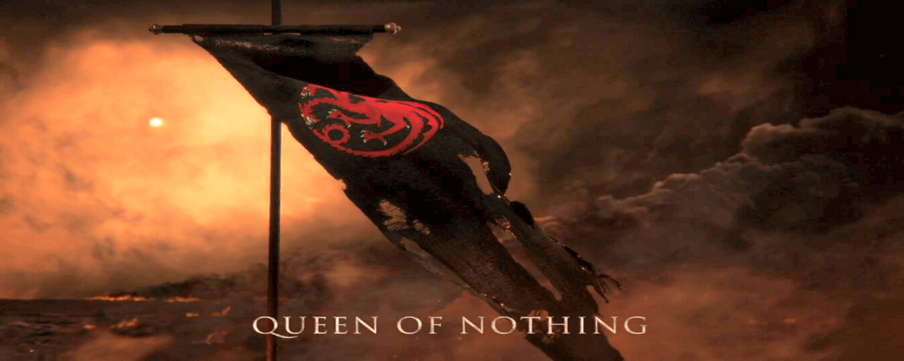

La Casa Baratheon de Bastión de Tormentas es una Gran Casa de Poniente que tradicionalmente gobierna las Tierras de la Tormenta en la costa este de Poniente. La Casa Baratheon se convirtió en la casa real de los Siete Reinos (como Casa Baratheon de Desembarco del Rey ) después de que Robert Baratheon liderara una rebelión contra la dinastía Targaryen. Al final de la rebelión, Robert ascendió al Trono de Hierro como Robert I y se casó con Cersei Lannister tras la muerte de Lyanna Stark.

La Casa Targaryen de Dragonstone es una Gran Casa exiliada de Westeros y la antigua Casa real de los Siete Reinos. La Casa Targaryen conquistó y unificó el reino antes de que fuera depuesto durante la Rebelión de Robert y la Casa Baratheon la reemplazó como la nueva Casa real. Los dos Targaryen supervivientes, Viserys y Daenerys, huyeron al exilio a las Ciudades Libres de Essos al otro lado del Mar Angosto. La Casa Lannister reemplazó a la Casa Baratheon como la Casa real tras la destrucción del Gran Septo de Baelor, pero el reino fue reconquistado por Daenerys Targaryen, retomando el Trono de Hierro tras la Batalla de Desembarco del Rey.

La casa Stark de Invernalia es una Gran Casa de Westeros y la casa real del Reino del Norte. Ellos gobiernan sobre la vasta región conocida como el Norte desde su asiento en Winterfell. Es una de las líneas más antiguas de la nobleza de Westeros con diferencia, y reclama una línea de descendencia que se remonta a más de ocho mil años. Antes de la conquista de los Targaryen, así como durante la Guerra de los Cinco Reyes y al principio de la guerra de Daenerys Targaryen por Poniente, los líderes de la Casa Stark gobernaron la región como los Reyes del Norte.

La Casa Lannister de Casterly Rock es una de las Grandes Casas de Westeros, una de las familias más ricas y poderosas y una de sus dinastías más antiguas. También fue la Casa real de los Siete Reinos tras la extinción de la Casa Baratheon de Desembarco del Rey, que había sido su Casa títere durante la Guerra de los Cinco Reyes, durante un breve período de tiempo hasta que la Casa Targaryen recuperó el Trono de Hierro en Daenerys. La guerra de Targaryen por Poniente.